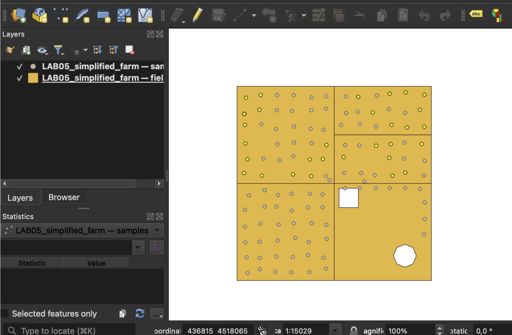
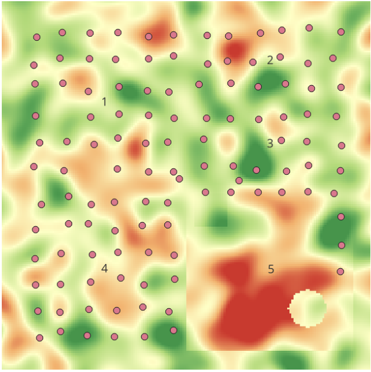
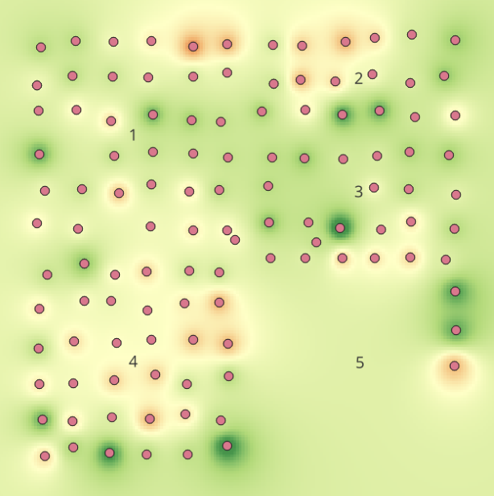
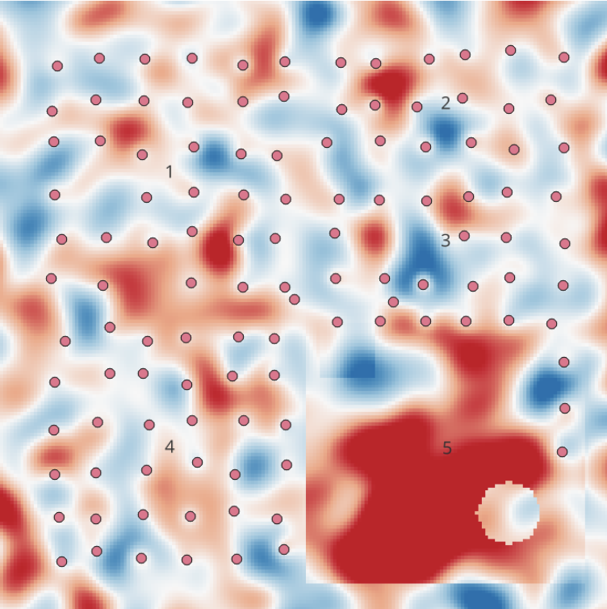

Lab 05 · November 2026
From Samples to Surface
The question
Can Field 5 support corn based on the available soil samples, and how trustworthy is an interpolated phosphorus map in places where samples are sparse?
The data
The farm is synthetic and contains five fields and 118 soil samples.
The phosphorus variable P was stored on two different scales,
so I corrected the Batch B values by dividing them by 100 and created
P_fix.
The method
I first selected samples that met the corn requirements for pH,
phosphorus, and potassium. I then interpolated P_fix with
inverse distance weighting using 10 m cells and compared powers
1, 2, and 4.
I compared the power-2 surface with the synthetic truth raster and
calculated an error raster as
idw_p2 - truth.
The map
The figures show how the result changed from the original attribute query to the interpolated surface and finally to the error map.
Figure 1 · Initial corn-suitable sample selection

P values.
The query selected 31 samples that met the corn
thresholds for pH, P, and K.
Figure 2 · IDW power 2 compared with the truth


Figure 3 · Error in the IDW surface

IDW power 2 − truth using 10 m cells.
Red shows where the interpolated map overestimated phosphorus,
blue shows where it underestimated phosphorus, and values near
white are close to zero error.
What I found
| Question | Answer |
|---|---|
| Q1 | The rows using the bigger P scale are from Batch B, measured by the Platte Valley lab, and they are in Fields 4 and 5. |
| Q2 | Using P, 31 samples suited corn. Using P_fix, 46 samples suited corn. The 15 additional suitable samples were in Fields 4 and 5. |
| Q3 | Field 5 was about 338 m from the nearest sample, while the most distant spot in Field 1 was about 128 m from the nearest sample. I expected the interpolated map to be least trustworthy in Field 5. |
| Q4 | No. None of the three IDW powers showed a clear phosphorus problem inside Field 5, although the surfaces responded differently to nearby samples. |
The main problem was not the IDW calculation itself but the lack of samples in part of Field 5. The power-2 map suggested almost no phosphorus shortage there even though the truth raster showed a large depleted area.
What this does not show
IDW estimates values between the measurements that are available, but it cannot reveal a local pattern that was never sampled. Changing the power changes how the existing samples are weighted, not the information that is missing between them.
AI disclosure
I used ChatGPT to clarify the QGIS steps, troubleshoot the Field Calculator and raster workflow, and review my HTML code. I checked the results using my QGIS outputs, the provided truth raster, and the Lab 5 instructions.
← Back to all labs